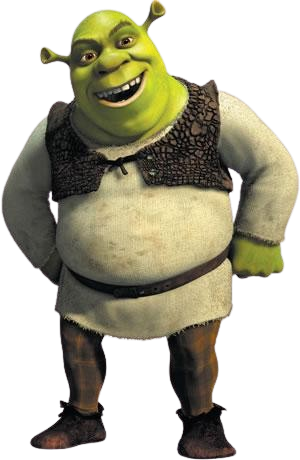
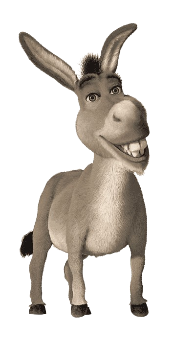
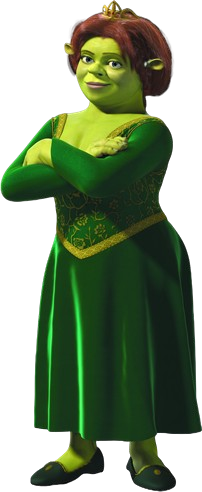
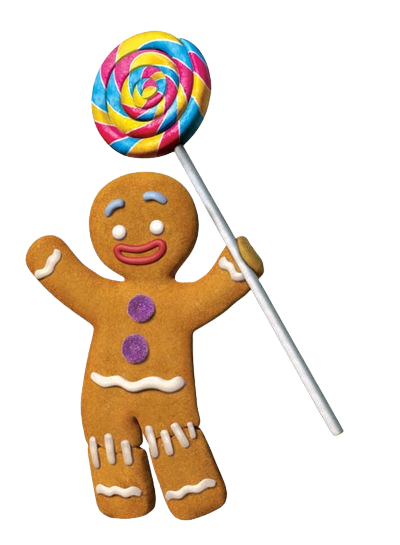

Shrek
Um ogro que apenas deseja viver em paz.

Burro
O companheiro falante de Shrek que traz humor à jornada.

Princesa Fiona
Uma princesa com um segredo surpreendente.

Biscoito De Gengibre
Um biscoito falante de, conhecido por sua famosa frase "Não me coma!
